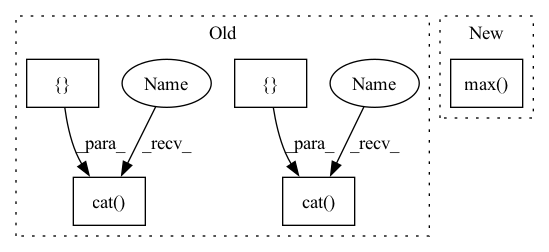

Pattern ID :35340

Before Change
// it"s not intuitive to remove edges from a graph represented as `edge_index`
edge_weight_remove = torch.zeros(edges_to_remove.size(1)) - 1e5
edge_weight = torch.cat(
[torch.ones(edge_index.size(1)), edge_weight_remove], dim=0)
edge_index = torch.cat([edge_index, edges_to_remove], dim=1).cpu().numpy()
adj_matrix = sp.csr_matrix(
(edge_weight.cpu().numpy(), (edge_index[0], edge_index[1])))
adj_matrix.data[adj_matrix.data < 0] = 0.
After Change
[edges_to_remove, edges_to_remove.flip(0)], dim=1)
edges_to_remove = edges_to_remove.to(edge_index)
num_nodes = max(edge_index.max().item(), edges_to_remove.max().item()) + 1
adj_matrix = to_scipy_sparse_matrix(edge_index, num_nodes=num_nodes).tocsr(copy=False)
row, col = edges_to_remove.cpu().numpy()
In pattern: SUPERPATTERN
Frequency: 3
Non-data size: 5
Instances
Fragment ID: 100423260
Project Name: edisonleeeee/graphwar
Commit Name: 5636c287ad7cc91164e629bd7b8b1da3afdfc2a7
Time: 2022-07-29
Author: cnljt@outlook.com
File Name: greatx/utils/modification.py
M Class Name: AnonimousClass
N Class Name: AnonimousClass
M Method Name: remove_edges(3)
N Method Name: remove_edges(3)
M Parent Class:
N Parent Class:
M File Name: greatx/utils/modification.py
N File Name: greatx/utils/modification.py
M Start Line: 61
M End Line: 70
N Start Line: 59
N End Line: 78
'>
Before Change
// it"s not intuitive to remove edges from a graph represented as `edge_index`
edge_weight_remove = torch.zeros(edges_to_remove.size(1)) - 1e5
edge_weight = torch.cat(
[torch.ones(edge_index.size(1)), edge_weight_remove], dim=0)
edge_index = torch.cat([edge_index, edges_to_remove], dim=1).cpu().numpy()
adj_matrix = sp.csr_matrix(
(edge_weight.cpu().numpy(), (edge_index[0], edge_index[1])))
adj_matrix.data[adj_matrix.data < 0] = 0.
After Change
[edges_to_remove, edges_to_remove.flip(0)], dim=1)
edges_to_remove = edges_to_remove.to(edge_index)
num_nodes = max(edge_index.max().item(), edges_to_remove.max().item()) + 1
adj_matrix = to_scipy_sparse_matrix(edge_index, num_nodes=num_nodes).tocsr(copy=False)
row, col = edges_to_remove.cpu().numpy()
'>
Fragment ID: 100423261
Project Name: edisonleeeee/graphwar
Commit Name: 5636c287ad7cc91164e629bd7b8b1da3afdfc2a7
Time: 2022-07-29
Author: cnljt@outlook.com
File Name: greatx/utils/modification.py
M Class Name: AnonimousClass
N Class Name: AnonimousClass
M Method Name: remove_edges(3)
N Method Name: remove_edges(3)
M Parent Class:
N Parent Class:
M File Name: greatx/utils/modification.py
N File Name: greatx/utils/modification.py
M Start Line: 61
M End Line: 70
N Start Line: 59
N End Line: 78
'>
Before Change
// Concatenate labels (due to data augmentation)
if stage == sb.Stage.TRAIN:
targets = torch.cat([targets, targets], dim=0)
lens = torch.cat([lens, lens], dim=0)
if hasattr(self.hparams.lr_annealing, "on_batch_end"):
self.hparams.lr_annealing.on_batch_end(self.optimizer)
After Change
predictions, lens = inputs
targets = batch.language_encoded.data
torch.max(0)
// Concatenate labels (due to data augmentation)
// if stage == sb.Stage.TRAIN:
// targets = torch.cat([targets, targets], dim=0)
// lens = torch.cat([lens, lens], dim=0)
'>
Fragment ID: 100423265
Project Name: speechbrain/speechbrain
Commit Name: 096548646d05a65a508c21b167a3d358af2f6bb1
Time: 2021-11-07
Author: parcollet.titouan@gmail.com
File Name: recipes/CommonLanguage/lang_id/train.py
M Class Name: LID
N Class Name: LID
M Method Name: compute_objectives(4)
N Method Name: compute_objectives(4)
M Parent Class: sb.Brain
N Parent Class: sb.Brain
M File Name: recipes/CommonLanguage/lang_id/train.py
N File Name: recipes/CommonLanguage/lang_id/train.py
M Start Line: 102
M End Line: 112
N Start Line: 103
N End Line: 103